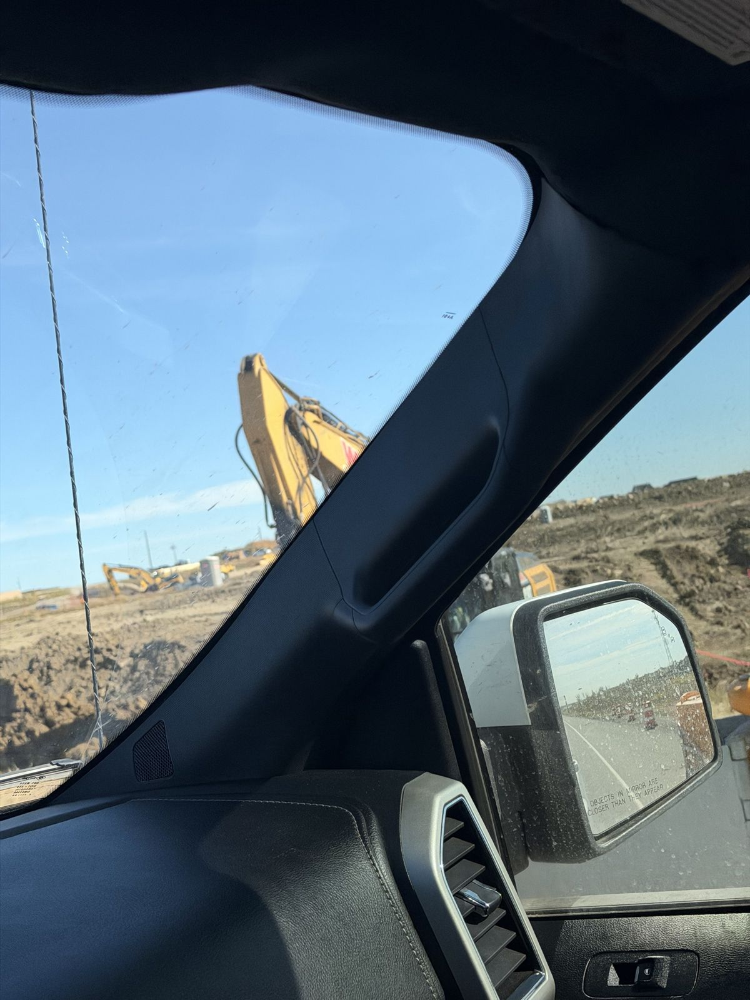
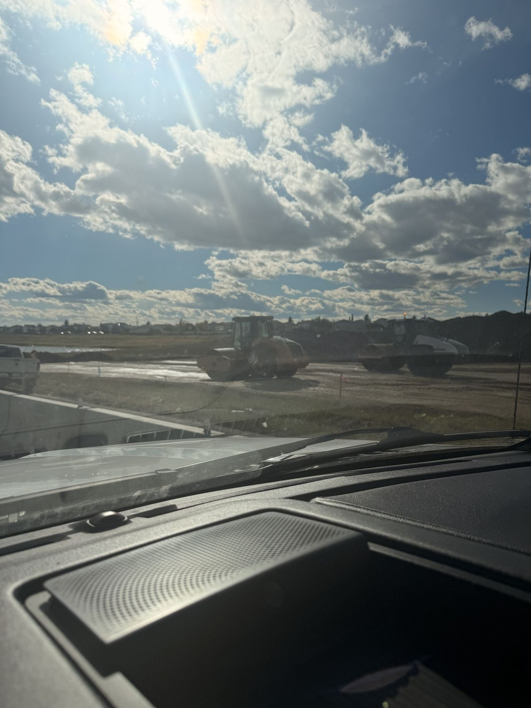
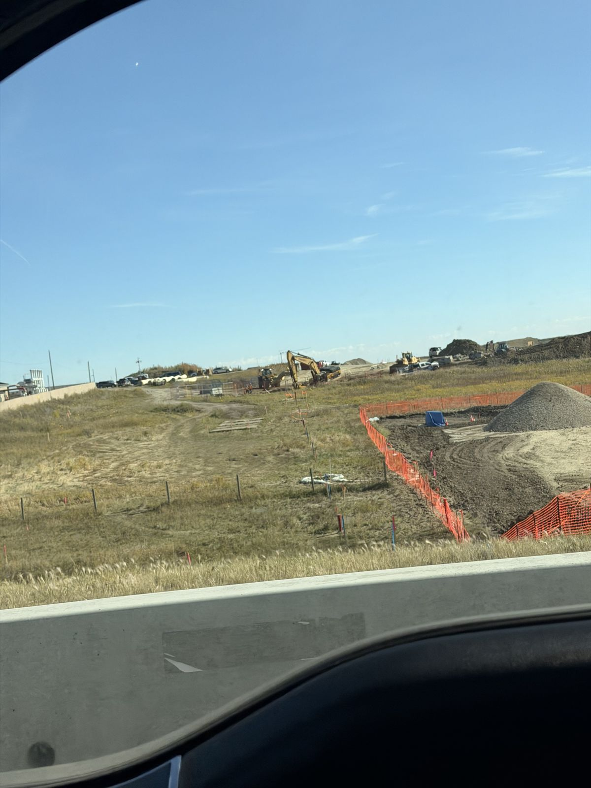

The short version
- Memorial Drive is being extended east as a four-lane road over Stoney Trail to 84 Street E.
- Construction started in early August 2026 and is expected to finish by the end of 2028.
- The estimated cost is $105 million.
- It gives Belvedere, Huxley, Hollins and Halstead a direct east–west link into the rest of the city.

What's being built
Memorial Drive currently ends just east of 68 Street in Abbeydale and Applewood Park. The City of Calgary is extending it east as a four-lane road, with a new overpass over Stoney Trail and the Rotary Mattamy Greenway, connecting to 84 Street E. The City describes the project as closing a critical gap in Calgary's east–west road network.
The new section is designed as an urban boulevard, not a traditional arterial road. That means separate space for walking, wheeling and driving, plus boulevards and medians with room for street trees. The design also includes a small plaza west of 84 Street, acting as a gateway between Belvedere's homes and the pathway network around Stoney Trail.

Timeline and cost
| When | What | Status |
|---|---|---|
| 2024–2025 | East Belvedere water feeder main installed along the future Memorial Drive route (68 St to 100 St SE) | Done / finishing |
| Aug 2026 | Construction begins: roadwork and underground utilities near Abbeydale | Started |
| 2026–2028 | Stoney Trail overpass and four-lane roadway to 84 St E | Underway |
| End of 2028 | Targeted completion | Targeted |
| Future | Possible extension toward the east city limits at 116 St E (studied, not yet funded or scheduled) | To be confirmed |
Estimated cost: $105 million. Over the long term, the City estimates about 35,000 vehicles a day will use this corridor once the Belvedere area is fully built out.

Which communities benefit
Belvedere
Belvedere is a newer community in Calgary's southeast, bounded by East Hills Shopping Centre and 84 Street SE to the west, Huxley to the north and 17 Avenue SE to the south. Development began in 2020. Memorial Drive gives it a direct route west instead of looping around via 16 Avenue NE or 17 Avenue SE.
Huxley
Huxley is a master-planned community inside the Belvedere Area Structure Plan, developed by Truman (East Huxley) and Genesis Land (West Huxley). It sits next to East Hills Shopping Centre, and builders market it as being along the planned 17 Avenue SE transit corridor. The Memorial Drive link puts Huxley a short drive from Stoney Trail and the established northeast.
Hollins and Halstead
Two new neighbourhoods north and northeast of East Hills broke ground in August 2026. Together they're planned for housing about 4,100 people, with a mix of single-family homes, semi-detached and townhomes, and retail. The developers are targeting first move-ins by mid-2027.

What this means if you're buying
- Commute: once it opens, the extension adds a straight east–west route from 84 Street toward Deerfoot and downtown.
- Already-built amenities: East Hills Shopping Centre, Stoney Trail access and 17 Avenue SE are already there today, so you're not waiting on everything.
- Timing: major road links usually make an area more convenient and more in demand once they open. Buyers who get in during construction are buying before that change, though no one can promise what prices will do.
- Expect construction: parts of the area will be a work zone through 2028, so check commute routes and detours before you buy.
Frequently asked questions
When will the Memorial Drive extension be finished?
Construction started in early August 2026, and completion to 84 Street E is expected by the end of 2028.
How much does it cost?
The estimated cost is $105 million.
Does Memorial Drive connect to Chestermere?
Not with this phase. The current work goes to 84 Street E. The City has studied extending Memorial Drive to the east city limits at 116 Street E, but funding and timing for that haven't been announced.
Is Huxley in the northeast or southeast?
Huxley straddles the line. It's within the Belvedere Area Structure Plan just north of Belvedere and East Hills, and listings describe it as both NE and SE Calgary depending on the phase.

Looking at Belvedere, Huxley or East Calgary?
I can send current pricing and quick-possession homes along the Memorial Drive corridor. Call or text 587-284-9422, or DM "MEMORIAL" on Instagram.
Sources: Global News, Aug 7 2026 · City of Calgary, Memorial Drive Extension study · City of Calgary, East Belvedere Feeder Main · Daily Hive · Huxley Community. Details can change; check with the City of Calgary for the latest. This article is general information, not advice.